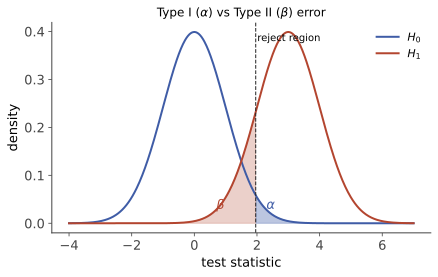

本页目录
统计 IV · 假设检验
区间估计问“哪些参数值仍与数据相容”，假设检验问“指定断言在预先约定的检验规则下是否会被拒绝”。它不是证明原假设真假的机器，而是一套把模型、错误率、数据与决策分开记账的程序。本页把两类错误、p 值、功效、效应量和多重检验放进同一张透明账本。

学习层：同一个 p 值，能回答多少问题？
1. 具体谜题：显著、重要和可复现是三件事
某产品指标以历史均值 \(0\) 为基线，个体标准差已归一化为 \(1\)。一次实验得到样本均值 \(\bar X\)。团队问了三个不同问题：
- 在 \(H_0:\mu=0\) 下，这个结果是否足够极端？
- 效应是否大到超过业务预先给出的最小重要差异 \(\Delta_{\rm min}\)？
- 若同时筛了很多指标，单项显著还能否原样解释？
第一个问题由检验规则回答；第二个需要效应量、区间与领域阈值；第三个必须把选择过程写进样本空间。把它们压成一句“\(p<0.05\)，所以有效”会丢掉最重要的信息。
2. 先预测：先做决策，再看答案
实验固定一个可精确复算的最小模型：\(X_i\stackrel{\text{iid}}{\sim}N(\mu,1)\)，检验 \(H_0:\mu=0\) 对 \(H_1:\mu\ne0\)。先预测“是否按单项水平拒绝 \(H_0\)”，再预测“置信区间是否已经完全越过预先指定的重要阈值”。揭晓后才能看到 z、双侧 p 值、功效、置信区间和多重检验账本。
3. 最小模型：每个数字回答自己的问题
在这个已知方差模型中，
水平 \(\alpha\) 的双侧检验在 \(|Z|>z_{1-\alpha/2}\) 时拒绝。与它匹配的 \(1-\alpha\) 置信区间为
\(0\) 不在区间内，当且仅当本检验拒绝。若真实效应指定为 \(\mu=\Delta_{\rm min}\)，功效是
功效是设计在某个备择值下长期拒绝的概率，不是本次结果为真的概率。实际重要性也不能由 p 值定义：本实验只有当整个区间都位于 \(\Delta_{\rm min}\) 之外时，才把“方向明确且超过该阈值”记为已建立；阈值本身来自领域，不来自统计软件。
无 JavaScript 时的静态读法：以下模型均取 \(\sigma=1\)、双侧 z 检验，并用 \(\Delta_{\rm min}=0.20\) 作为示范阈值。
| 情境 | 单项检验 | 区间与实际意义 | 应读出的边界 |
|---|---|---|---|
| \(n=40,\ \bar X=0.05\) | \(z\approx0.32\)，不拒绝 | 区间很宽，重要性未建立 | 不拒绝不等于证明零效应 |
| \(n=80,\ \bar X=0.22\) | \(p\approx0.049\)，刚好拒绝 | 区间下端仍接近 0 | 显著不自动等于重要 |
| \(n=10000,\ \bar X=0.05\) | \(z=5\)，强烈拒绝 | 区间完全落在 \(\pm0.20\) 内 | 大样本能检出很小差异 |
| \(n=400,\ \bar X=0.32\) | 拒绝 | 区间下端超过 \(0.20\) | 结论依赖预先给定阈值 |
| \(n=16,\ \bar X=0.25\) | 不拒绝 | 区间跨过 0 与阈值 | 低功效下证据不足很常见 |
| 20 个独立空检验 | 期望假阳性数 \(=1\) | 至少一个假阳性的概率约 \(64.2\%\) | 期望计数不等于家族错误率 |
4. 动手验证：五本账不要串栏
切换“边缘显著”和“大样本微效应”，两者都可能拒绝 \(H_0\)，但区间、功效与重要性结论完全不同。再把同时检验数调到 \(m=20\)：独立空检验下
前者是期望假阳性个数，后者是家族中至少一个错误的概率。Bonferroni 使用单项阈值 \(\alpha/m\)，不要求独立性，并保证家族错误率不超过 \(\alpha\)；它可能保守，但不会把“挑出最小 p 值”伪装成预先指定的单项检验。
5. 误区与边界
- p 值不是 \(P(H_0\mid\text{data})\)。它是在完整零假设模型与分析规则下，统计量至少同样极端的尾概率。
- \(\alpha\) 与 \(\beta\) 的此消彼长有条件。固定样本量、效应、噪声和同一检验族时移动阈值会交换两类错误；增大样本、降低噪声、配对或改善测量可同时提高区分能力。
- “不拒绝”不是“接受为真”。若目标是证明足够接近，应预先定义等效界并使用等效性检验，而不是把普通检验的非显著当作等效。
- 可选停止不是免费加样本。反复查看普通 p 值并在首次显著时停会改变错误率；预先设计的序贯检验可以有效，但必须使用对应边界。
- 本页功效是模型内功效。偏差、依赖、缺失、测量漂移和事后筛选不会被一条正态曲线自动修复。
6. 回到一般检验语言
检验由零假设族、统计量、拒绝域和采样/选择规则共同定义。Neyman–Pearson 引理对简单零假设与简单备择给最强检验；复合假设、双侧问题和模型选择需要额外结构，不能把“固定 \(\alpha\) 后总有唯一最优检验”当作普遍结论。匹配的检验与置信集合是同一族接受域的两种读法，但只有在模型、侧别和显著性水平一致时才可直接对偶。
7. 迁移问题
某团队测试 40 个指标，只报告最小的 \(p=0.018\)；另一个团队只测试一个预先注册指标，得到同样的 p 值。两项数据的单项 z 分数相同，为什么证据账本不同？若第二个团队还规定“提升至少 0.2 个标准差才值得上线”，你还需要哪些区间信息？
1. 基本框架：错误率属于决策规则
原假设 \(H_0\) 是被检验的参数集合，备择 \(H_1\) 是对立集合。检验统计量必须在 \(H_0\) 下有可校准分布；拒绝域是数据落入后拒绝 \(H_0\) 的集合。
| 决策 | \(H_0\) 真 | \(H_0\) 假 |
|---|---|---|
| 拒绝 \(H_0\) | 第一类错误，概率至多 \(\alpha\) | 正确拒绝，概率为功效 \(1-\beta\) |
| 不拒绝 \(H_0\) | 未犯第一类错误 | 第二类错误，概率 \(\beta\) |
这里的概率是重复抽样下对规则的评价，不是给本次假设真假分配概率。流程应在看结果前固定：问题与侧别、模型与统计量、错误率、样本量/停止规则、分析与报告口径。
2. p 值、效应量与区间
p 值是在 \(H_0\) 及完整分析规则成立时，得到至少同样极端统计量的概率。极端性的定义随检验而变；双侧检验也不总能机械写成单侧概率乘二。报告应至少同时给出效应量、区间、样本量和分析选择。
常见误读包括：把 p 值当作原假设为真的后验概率；把 \(p<0.05\) 当作大效应；把非显著当作零效应；把探索后选中的最小 p 值当作预注册结果。贝叶斯后验需要先验与似然，实际重要性需要领域阈值，等效结论需要等效性设计，多重选择需要校正或独立确认。
3. 常用参数检验与假设
| 目标 | 典型统计量 | 关键条件与实务读法 |
|---|---|---|
| 单总体均值，\(\sigma\) 已知 | \(Z=(\bar X-\mu_0)/(\sigma/\sqrt n)\) | 正态模型或足够可靠的大样本近似 |
| 单总体均值，\(\sigma\) 未知 | \(T=(\bar X-\mu_0)/(S/\sqrt n)\) | 正态样本时精确为 \(t_{n-1}\)；大样本可近似 |
| 两独立均值 | Welch t | 不强行假定方差相等；自由度用 Welch–Satterthwaite 近似 |
| 配对均值差 | 对差值做单样本 t | 配对结构必须来自设计，不能事后随意配对 |
| 单/双比例 | score、精确或大样本 z | 稀有事件和小样本应避免粗糙正态近似 |
| 正态总体方差 | \(\chi^2=(n-1)S^2/\sigma_0^2\) | 对正态性敏感，偏离时需稳健方法 |
不建议先做方差齐性 F 检验，再依据结果选择 pooled t 或 Welch t；这种两阶段选择改变整体错误率，而且 F 检验本身对非正态敏感。若没有由设计与科学机制支持的等方差约束，Welch t 通常是更稳妥的默认值。单侧或双侧也必须由问题在看数据前决定。
水平 \(\alpha\) 的双侧点零假设检验与 \(1-\alpha\) 置信区间对偶：在同一模型和构造下，\(\theta_0\) 不在区间内，当且仅当拒绝 \(H_0:\theta=\theta_0\)。
4. 多重检验与分布检验
做 \(m\) 个水平 \(\alpha\) 的空检验时，\(m\alpha\) 是期望假阳性数；独立时 \(1-(1-\alpha)^m\) 才是至少一个假阳性的概率。Bonferroni 控制家族错误率；Benjamini–Hochberg 控制的是不同目标，即假发现率。选择哪一个取决于错误损失和研究流程。
拟合优度与列联表常用 Pearson 统计量
其卡方近似要求期望计数不能过度稀疏；“每格都必须至少 5”只是保守经验法则，不是普遍定理。稀疏表可合并有科学意义的类别，或使用精确/置换/Monte Carlo 校准。估计过参数时，自由度也要扣除相应约束。
5. 典型例题
例 1（单侧 t 检验） 灯泡寿命标称 \(\mu_0=1000\) h，\(n=16,\bar X=970,S=60\)。预先设 \(H_1:\mu<1000\)，则 \(T=-2.0\)，自由度 15，单侧 \(p\approx0.032\)。在 \(\alpha=0.05\) 下拒绝，但仍应报告均值差与区间，并核对独立、抽样和近似正态条件。
例 2（Welch 而非先筛方差） 两工艺样本方差不同或样本量不等时，直接用 Welch 标准误与近似自由度比较均值。只有在等方差来自可信模型约束时，pooled t 才是针对该约束的分析，而不是 F 预检“批准”后的奖励。
例 3（A/B 转化率） \(\hat p_A=0.062,\hat p_B=0.055\)，两组各 \(5000\)。点差为 \(0.7\) 个百分点；合并零假设下的 score z 约为 \(1.49\)，双侧 \(p\approx0.14\)。结论是当前设计下证据不足，不是两版本相同；下一步应结合最小重要差异、功效、成本和预先规定的停止规则。
下一页从单个参数比较走向线性回归与方差分析；同一套模型、错误率和效应量账本会继续出现。